The #MeToo mobile app is a project that I worked on during my graduate studies. It is a database for all accounts of sexual harassment, abuse and assault in existence, as well as a place to archive and file reports of such crimes and misdemeanors. The user, when filing a report, has the ability to take a photo of the assailant, or upload an existing photo of the assailant, which would then be saved into the #MeToo database. Using facial recognition technology and augmented reality, other users of the app would then be able to determine, by holding the app’s camera up to someone’s face or uploading a picture, whether or not the person they’ve encountered has any reports filed against them. In this way, people using #MeToo would be able to better gauge if a situation is unsafe. Additionally, it would provide more accountability to abusers, and create more serious consequences for the mistreatment of others human beings.
The audience is targeted towards anyone who experiences or witnesses sexual assault, abuse, or harassment. As the statistics would show, this group of people is mostly composed of women, but it would not be exclusively targeted towards those who identify as female.
My environmental scan found several apps that have similar intentions; for example, the SafeTTC app documents all types of harassment on the TTC and also allows users to upload photos of assailants. Another (in development) app called LegalFling provides a live contract that both parties would agree to before participating in any type of intercourse, thereby ensuring the consent of both (or more, as the website suggests) people. Additionally, Hollaback! Is an app that documents sexual harassment on streets and marks the places where it occurs. However, #MeToo differentiates itself from existing apps in that it employs technology that is still developing. Through its augmented reality functionality and facial recognition, #MeToo is a live and interactive database for sexual assault, providing crucial information quickly.
 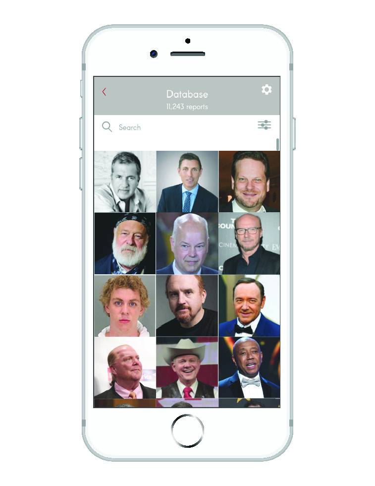
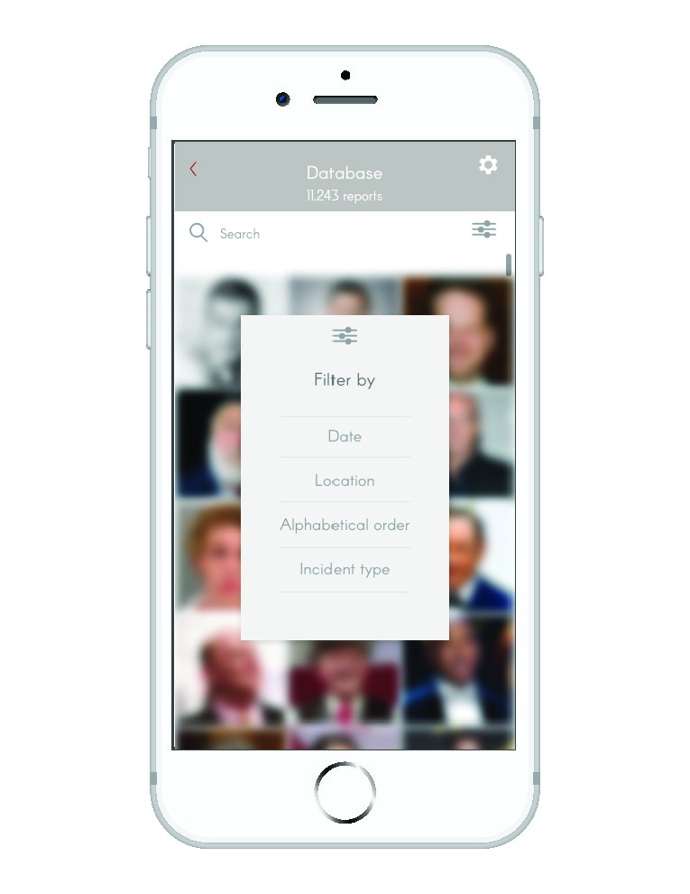
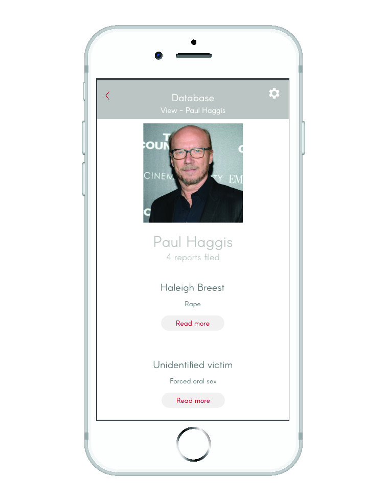
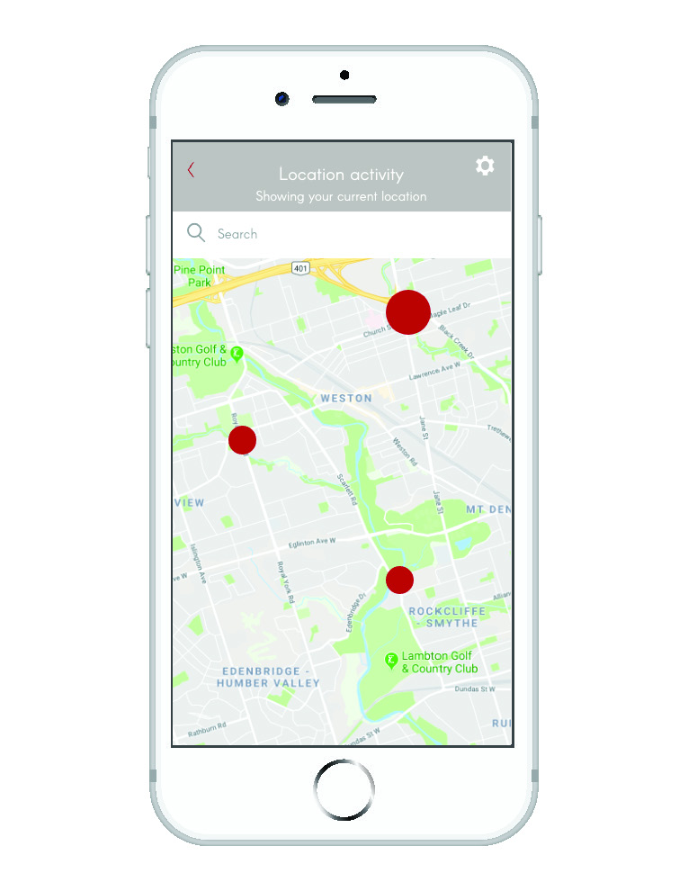
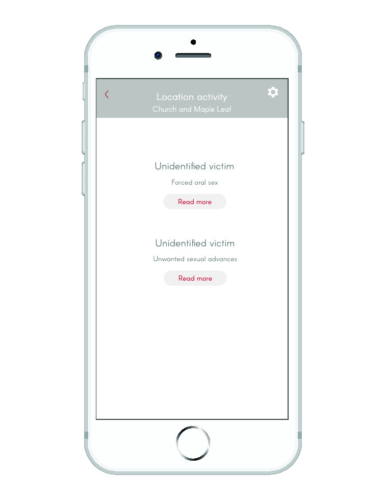
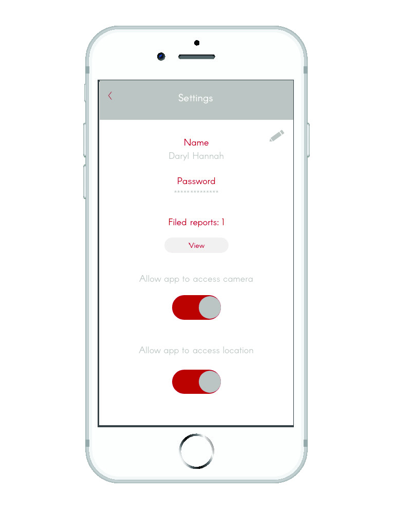
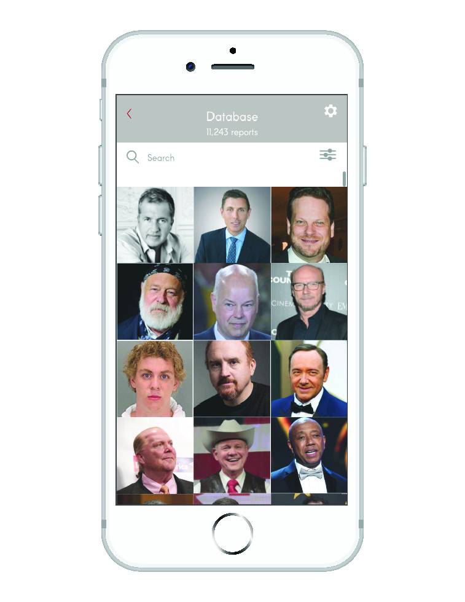
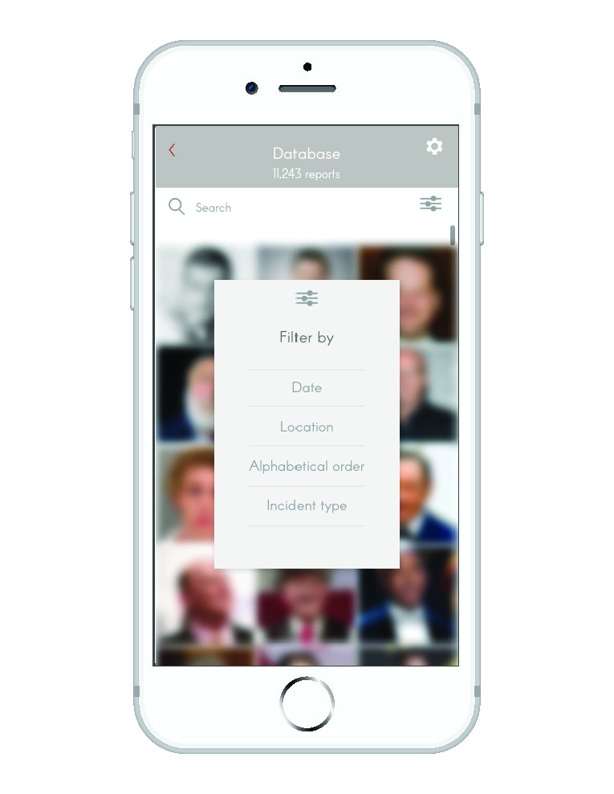
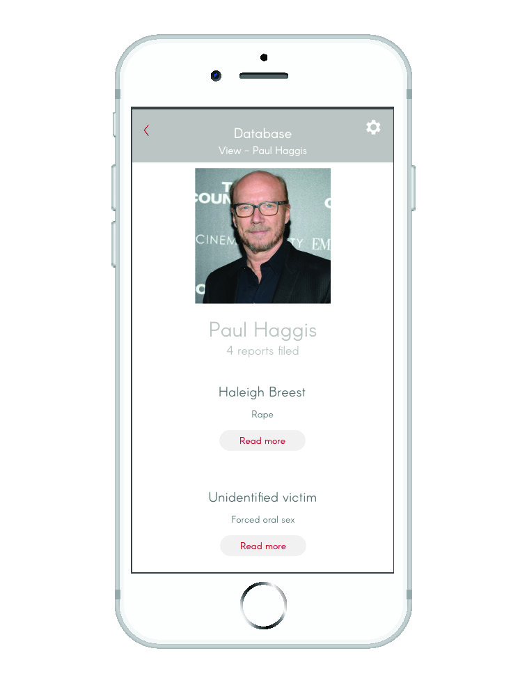
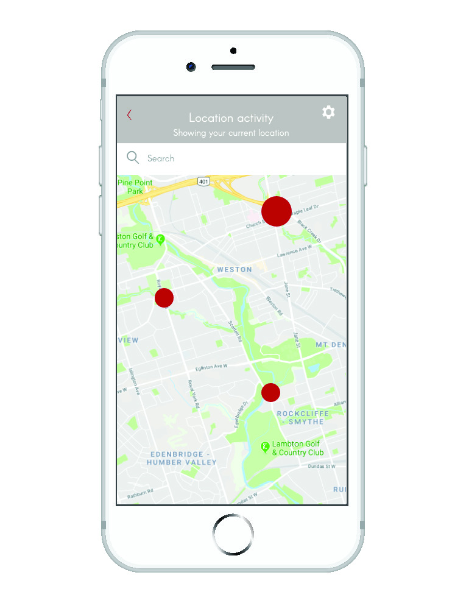
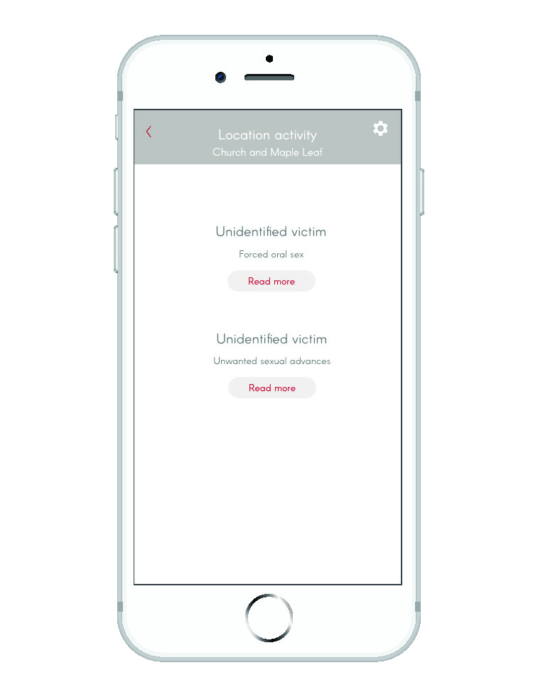
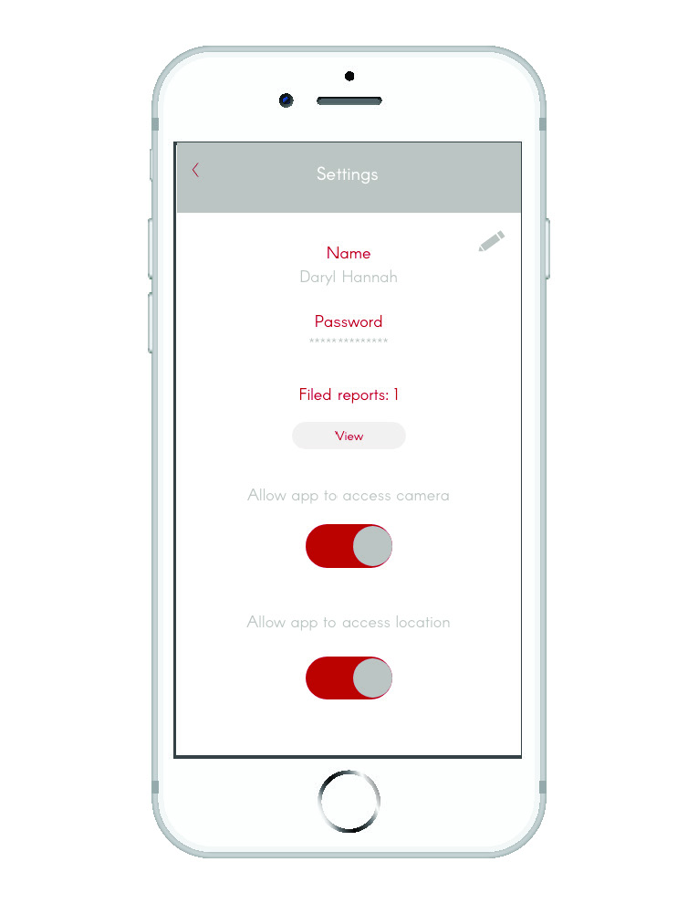
Following the design phase, I had several people test the app and give their feedback through a survey. Through the testing process, I found that a lot of people felt that the navigation was not inherently intuitive, and that better on-boarding for first time users would help with comprehension. It was also mentioned that it would be good to provide more information to the user about data storage. There was also confusion when using the Database section and the Location Activity section.
I think a lot of the feedback I gathered early on was useful in helping me figure out layout and content, but the most fruitful and responsive feedback came after fleshing out the prototype more fully. In the future, I think that the design prototyping process could be extended and have multiple phases of user testing for high-fidelity prototypes. A lot of the comments made, especially where users were confused about navigation or the intention of the product, are very helpful and in future development would be something I would consider. Overall, the process of sketching, then wireframing, gathering feedback, and starting mockups and gathering feedback, did feel like a pretty good path to take in terms of designing something like this.